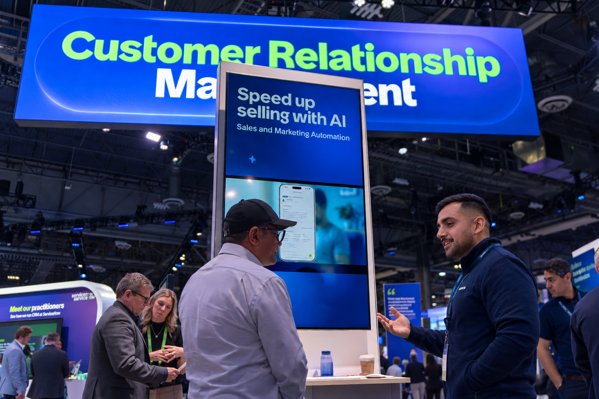

01 · Learn the work
Understand the workflow before proposing the solution.
Work backward from the decision, then map the people, handoffs, data, constraints, and stakes that determine whether a new way of working will actually be used.
Russ Mohammad
Team Lead, HCLS Solution Consulting
I help healthcare and life-sciences teams turn ambiguous AI and workflow problems into credible technical decisions—by shaping the story, building the proof, and making it useful for the people who have to run it.

Evidence finder
Search the work by capability, work type, or outcome and jump straight to the most relevant evidence.
Search a theme to surface the most relevant proof.
How I build
An AI-native SE does not make the product the answer. They find the operating problem, build a testable experience around it, and make the learning useful well beyond one meeting.
01 · Learn the work
Work backward from the decision, then map the people, handoffs, data, constraints, and stakes that determine whether a new way of working will actually be used.
02 · Build the proof
Build the customer-specific demo, POC, data, and AI scenario that lets people see the future state, challenge it, and decide what must be true to adopt it.
03 · Make it compound
Package the learning into repeatable assets, coach the field, and bring real customer signals back to product so the next build starts further ahead.
Current scope
Start with the evidence
Competitive wins, recoveries, and the technical judgment that changed the direction of a room.
02Make the work compoundCoaching, field-built tools, and repeatable patterns from the toughest customer work.
03The straight factsRoles, scope, education, awards, and a downloadable résumé.
Interactive operating system
Use the six signals to see how I move a complex pursuit from an interesting idea to a decision a team can confidently act on.
01 / 06
Clarify what is actually being decided, who feels the operational friction, and what needs to be true for the investment to make sense.
Experience
Enterprise solution consulting · HCLS
2026 — Present
Right-hand leadership partner for an 8-person solution consulting team—pairing strategic-account work with coaching, interview support, manager coverage, deal guidance, and internal enablement.
Enterprise solution consulting · HCLS
2025 — Present
Technical strategist across the CRM suite and HCLS products, supporting 10+ sellers at a time.

Life-sciences software
2023 — 2025
Led discovery and demonstrations for strategic life-sciences accounts while mentoring solution consultants and account executives.

Retail & CPG solution engineering
2021 — 2023
Partnered with mid-market AEs to translate business and IT needs into persona-based demos, workshops, and reusable technical assets.

Clinical operations · Epic Ambulatory
2016 — 2021
Optimized Epic Ambulatory workflows across clinical departments, improving workflow adoption by 25% and building reports and dashboards with clinical and IT stakeholders.
Selected work
Company and customer names are intentionally removed. The operating detail is not: hard calls, honest tradeoffs, and technical experiences that made the path forward credible.
F100 life sciences company · Competitive POC
For an F100 life sciences company, I led a one-system order-orchestration story across provider intake, order work, lab scenarios, and visibility.
Rebuilt the full experience in days when the source instance disappeared a week before delivery; prepared 38 named testers, 20+ internal pressure-testers, and an HTML fallback.
Outcome Vendor of choice for a $5M+ program from a 15+ vendor field.
National healthcare services organization · Recovery
When a national healthcare services organization leaned toward a point solution, I restarted with deeper discovery and modeled the actual work—not a feature checklist.
Built a tailored environment with 150 patient records, 400 cases, 600 interactions, knowledge, AI-guided analysis, and a travel-team automation.
Move Replaced a generic demo with a workflow buyers could recognize as their own.
Global medtech manufacturer · Solution judgment
For a global medtech manufacturer, I validated generally available capability with product experts and advised against a stretched custom build.
The recommendation used purpose-built functionality for the 8D process, removing both roadmap dependence and unnecessary supplier-portal complexity.
Principle Technical judgment means making the hard choice easy to act on.
Leadership
I lead as a player-coach: own the hard work with the team, make the quality bar visible, and turn the best of that work into capability other people can use.
01
As the manager’s right-hand partner on an 8-person team, I step into deals, interviews, coaching, coverage, and enablement when the work needs an owner—while keeping the team’s judgment and momentum moving.
02
I turn successful builds into reusable capability: a custom Claude demo builder, an executive microsite skill, lab guides, decision stories, and testing plans that let the field start stronger.
03
For a critical POC, I brought 20+ SCs together to pressure-test workflows, anticipate buyer questions, and sharpen the experience before it reached the customer. Co-leading HCLS Unlocked for 58 Core SCs extended that practice across the field.
In the field
From a packed room to a hands-on evaluation, the test is the same: make people feel the workflow, understand the tradeoff, and know what happens next.
How I multiply the work
On the stage
I’ve led the room as well as the technical work—turning complex platform stories into moments that connect with a live audience.
What I care about
I’m interested in commercial, service, clinical-adjacent, and patient-support experiences where AI improves the speed, quality, and traceability of real decisions. The operating model matters as much as the technology.
Let’s talk